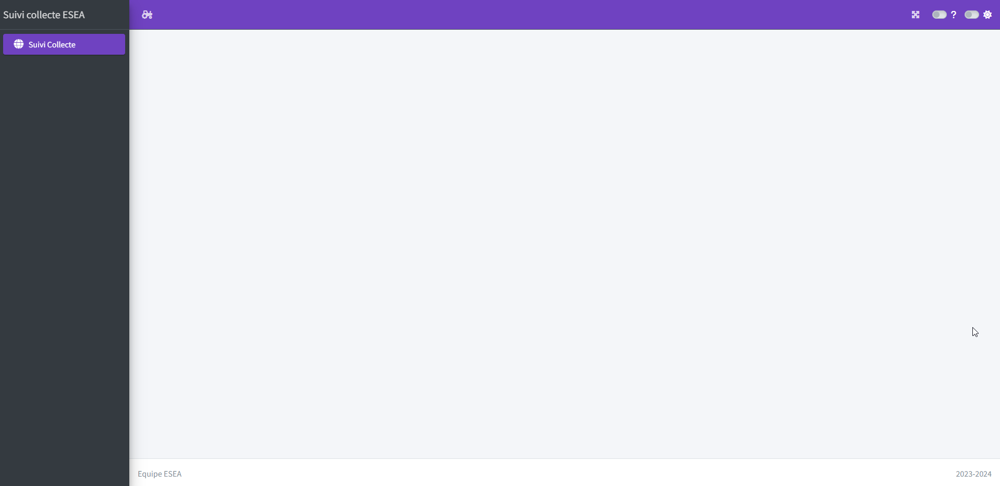

library(tidyverse)
library(arrow)
app_ui <- function(request) {
tagList(
# TOUJOURS laisser cette fonction
golem_add_external_resources(),
# Création de la page
bs4Dash::dashboardPage(
# Titre général
title = "Suivi collecte EXF",
# Ajouter le bouton en haut à droite permettant d'ouvrir le site en page complète
fullscreen = TRUE,
# Création du header
header = bs4Dash::dashboardHeader(
# Titre du header qui se met en haut à gauche du site
title = "Suivi collecte EXF",
# Couleur du header --> choix de couleurs dans le help de bs4Dash : ?bs4Dash::dashboardHeader
status = "olive",
# logo à gauche du header qui permet d'ouvrir et fermer le menu latéral
# possibilité d'utiliser les logos de bootstrap : https://fontawesome.com/icons ou https://getbootstrap.com/docs/3.3/components/#glyphicons
sidebarIcon = shiny::icon("tree")
),
# Création du menu latéral
sidebar = dashboardSidebar(
# Couleur du menu latéral
status = "olive",
# id à laisser
id = "sidebar",
# ajout de la liste des liens dans le menu
bs4Dash::sidebarMenu(
id = "sidebarmenu",
# pour chaque page à afficher mettre un menuItem avec le libellé affiché
# le tabName qui fait le lien avec l'affichage dans le body
# le logo
bs4Dash::menuItem("Suivi Cawi", tabName = "cawi", icon = icon("globe")),
bs4Dash::menuItem("Suivi Capi", tabName = "capi", icon = icon("person"))
)
),
# Ajout du body
body = dashboardBody(
# liste des pages à afficher
bs4Dash::tabItems(
# pour chaque page on met un tabItem avec le nom du tabName du menuItem
# et la fonction d'affchage de la page (cette fonction est expliquée dans la suite : Ajouter des modules)
bs4Dash::tabItem("cawi", mod_Cawi_ui("Cawi_1")),
bs4Dash::tabItem("capi", mod_capi_ui("capi_1"))
)
),
# Ajout d'un footer avec un texte à gauche et à droite dans cet exemple.
footer = bs4Dash::dashboardFooter(
left = "Equipe EXF",
right = "2023-2024"
)
)
)
}5 Squelette de l’application Shiny
L’application shiny sera propulsée par bs4Dash dans le cadre fourni par Golem.
5.1 Schéma d’une page bs4Dash
Une page de bs4Dah contient :
- un menu latéral = dashboardSidebar
- un haut de page = dashboardHeader
- un corps de page = dashboardBody qui contient des bs4ValueBox et des tabBox

5.2 Organisation des programmes avec Golem
En shiny il y a traditionnellement une fonction pour l’interface utilisateur ui et une pour les calculs côté serveur server. Ce qui permet de lancer la fonction shinyApp avec les 2 paramètres ui et server.
En Golem l’architecture est quelque peu différente avec une organisation plus modulaire qui permet une plus grande flexibilité. Les programmes sont dans le répertoire R. Suite à l’initialisation du siten il y a plusieurs fonctions qui ont été créées. Pour notre besoin, nous allons seulement regarder les programmes app_server.R et app_ui.R. Ces programmes sont le coeur de notre site. Pour développer notre site, nous allons créé des modules qui seront utilisés par ses programmes app_server et app_ui
5.2.1 app_server.R
Ce programme ne contient qu’une seule fonction app_server() qui est vide pour l’instant. Ici seront copiés les fonctions server de chacun des modules que nous allons créé.
5.2.2 app_ui.R
Cet programme contient les fonctions nécessaires à l’affichage de l’application : app_ui pour l’affichage global et golem_add_external_resources pour ajouter/définir des ressources externes comme le favicon ou le titre de l’application par exemple.
C’est la fonction app_ui qui permet de définir le squelleet de la page. Dans le tagList, on va créer une dashbordPage qui contient le sidebar, le body et un footer :
Dans cette page, nous avons utilisé le package bs4Dash. Il convient de l’indiquer en haut du programme comme un import. Soit on indique l’import total, soit uniquement les imports des fonctions utilisées.
# Exemple d'un import total d'un package
#' @import bs4Dash
# Exemple d'un import de quelques fonctions d'un package
#' @importFrom bs4Dash dashboardPage dashboardHeader dashboardSidebar sidebarMenu dashboardBody menuItem tabItem dashboardFooter
# La deuxième méthode est la plus propre mais est plus lourde à écrire/maintenir.Dans la suite, il faudra noter d’ajouter systématiquement les packages utilisés en import sur la page qui utilise le package.
Quand c’est fait, il faut lancer la commande suivante dans le terminal afin d’ajouter le package dans les dépendances de l’application :
attachment::att_amend_desc()La page squelette est créée. Il convient maintenant de créer les modules. Un module est une page du dashboard appelé par un item du menu latéral.
5.2.3 Ajouter des modules
Pour ajouter un module, il suffit de lancer la commande :
golem::add_module(name = "name_of_module1", with_test = TRUE) # Name of the moduleCela crée 2 fichiers :
- R/mod_name_of_module1.R : tout le code nécessaire à l’affichage de la page name_of_module1
- tests/test-mod_name_of_module1 : les tests de la page (non utilisée dans une première version du produit)
En ouvrant le fichier mod_name_of_module1.R, en bas du fichier on voit les 2 lignes de code à copier dans app_server.R et dans app_ui.R :
## A copier dans un tab_time de app_ui.R
mod_name_of_module1_ui("name_of_module1_1")
## A copier dans la fonction app_server de app_server
mod_name_of_module1_server("name_of_module1_1")5.3 Ajout du Favicon
Avant de peupler les pages avec les box, il est possible de mettre à jour le favicon du site. Le favicon est l’image qui s’affiche dans l’onglet du navigateur à côté du nom de la page. Vous pouvez trouver des favicon sur le site IconFinder. Choisissez un icon Free, téléchargez le au format .ico et déposez le dans suiviCollecte/inst/app/www.
5.4 Lancement application shiny
Vous pouvez à présent visualiser le squelette de votre application en lançant les commandes du programme dev/run_dev.R
# Set options here
options(golem.app.prod = FALSE) # TRUE = production mode, FALSE = development mode
# Comment this if you don't want the app to be served on a random port
options(shiny.port = httpuv::randomPort())
# Detach all loaded packages and clean your environment
golem::detach_all_attached()
# rm(list=ls(all.names = TRUE))
# Document and reload your package
golem::document_and_reload()
# Run the application
run_app()Cela devrait donner quelque chose similaire à :

5.5 Commit et push Github
Avant de passer à la suite, pensez à commiter et pusher votre code.
5.6 Création d’une première page
Maintenant que l’on a notre premier module (première page), nous allons pouvoir la peupler avec des box. Voir page suivante